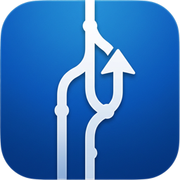

Stay on top of your GitHub pull request review queue.
Create filtered views using any GitHub search query. Monitor review requests, your own PRs, team activity, or anything you can search for on GitHub.
See author, review status, CI checks, comment threads with unresolved counts, labels, lines changed, and age at a glance. PRs are grouped by organization and repository.
Automatically detects stacked PRs and displays them as expandable chains, so you can review dependent changes in order.
Point the app at your git directories and it matches PRs to local branches, worktrees, and recent commits. Open any PR directly in VS Code or iTerm.
Get notified when new pull requests appear in any of your views. Configurable per view.
Add summary and detail widgets to your desktop for a quick overview of your review queue without opening the app.
Configurable refresh intervals from 30 seconds to 30 minutes for both PR data and local repository scanning.
Requires macOS 14 (Sonoma) or later and a GitHub personal access token with repo scope.